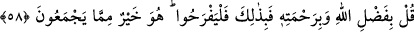

Sırf hidâyet ve hikmet olan senin kelâmın ne güzeldir
İnâyet ve rahmetin ta kendisi olan senin haberin ne güzeldir
Senin kelamın irfan ehline kement, bağ çekti.
Çorak yerden himmet gülistanına çekti
Denilir ki: “Kur’an nefislere öğüt, göğüslere şifa, ruhlara hidâyettir, yol göstericidir.”
Yine şöyle söylenir: “Kur’an’ın öğüt olması avam için, şifa olması havas için, hidâyet
olması/yol göstermesi ehassu’l-havas için, rahmet olması ise bütün varlıklar içindir.
Çünkü Allah her bir varlığı kendi mertebelerine ulaştırmıştır.
58. De ki: “Allah’ın lütfuyla ve rahmetiyle (evet) işte onunla ferahlansınlar. O,
onların toplayıp yığdıklarından daha hayırlıdır.”
Ey Muhammed, insanlara “de ki: “Allah’ın lütfuyla ve rahmetiyle” lütuf ve rahmet
Kur’an’ın indirilmesinden ibarettir. Cümlede bir hazf vardır. Aslı şu şekildedir:
‘Allah’ın lütuf ve rahmetiyle ferahlansınlar.’
Allah’ın lütuf ve rahmetinin her biri ferahlanmayı gerektirir. Âyetin ifâde biçimine
göre mânâ şöyle olmaktadır: “Sadece onun lütuf ve rahmeti sebebiyle sevinsinler.”
Sonra şöyle buyrulmuştur: Evet “işte bununla ferahlansınlar.” Bu ifâde, mânâyı
te’kid etmek ve pekiştirmek içindir. Yâni eğer bir şey ile ferahlayacaklarsa, başka bir
şeyle değil bununla ferahlasınlar. “O,” yani Allah’ın mezkur lütuf ve rahmeti “onların
toplayıp yığdıklarından” fânî mallarından “daha hayırlıdır.”
Büyüklerden birisi şöyle der: “Allah’ın lütfu sana ihsanda bulunmasıdır. Rahmeti ise
sen daha hiçbir şey değilken Allah tarafından senin için önceden belirlenen hidayettir.
Allah Teâlâ sanki şöyle buyuruyor. Ey kulum! Ne tâatine ne de ettiğin hizmete güven.
Sen sadece benim lütuf ve rahmetime güven. Çünkü tek sermayen budur.”
Herkesin bir sermayesi vardır.
Mü’minlerin sermâyesi benim lütfumdur.
Herkesin bir hazinesi vardır.
Mü’minin hazinesi benim rahmetimdir.
Eğer padişahlar hazineleri olmasına heves ederlerse
Dervişe Dost’un lütfu hazine olarak yeter ancak
Şayet dünya malı biriktirmede fayda olsaydı bu Karun’a fayda verirdi.
Malik b. Dînar der ki: “Bir gün bir toplulukla beraber gemideydim. Öşür memuru,